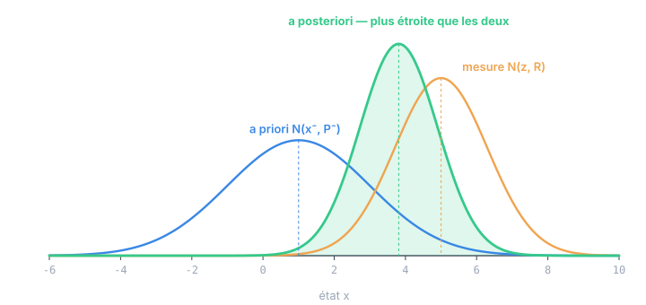

Chapitre 01
Le problème de l'estimation d'état
Objectifs du chapitre
- Poser le problème : connaître l'état caché d'un système à partir de mesures bruitées et d'un modèle imparfait.
- Comprendre pourquoi aucune des deux sources — modèle ou mesure — ne suffit seule, et pourquoi il faut les fusionner.
- Faire le saut conceptuel central : estimer, ce n'est pas suivre une valeur, c'est suivre une distribution de probabilité.
- Situer le filtre de Kalman comme la solution optimale de ce problème dans le cas linéaire-gaussien.
1. Un système, un état, et le brouillard
Un système dynamique — un mobile qui roule, un bras qui tourne, une cuve qui se remplit — possède à chaque instant un état : l'ensemble minimal de grandeurs qui, si on les connaissait exactement, résumerait tout ce qu'il faut savoir pour prédire la suite. Position et vitesse d'un véhicule, angle et vitesse angulaire d'un pendule, niveau et débit d'un réservoir. On le note x, un vecteur.
Le drame, c'est qu'on ne connaît jamais x exactement. On dispose de deux fenêtres sur lui, toutes deux embuées :
- Un modèle qui dit comment l'état devrait évoluer d'un instant au suivant (« à vitesse constante, la position avance de v·dt »). Mais le modèle est une approximation : il ignore le vent, les frottements, une commande mal exécutée.
- Des capteurs qui mesurent quelque chose lié à l'état (un GPS, un codeur, une IMU). Mais toute mesure est bruitée : le GPS oscille de quelques mètres, le codeur quantifie, l'accéléromètre dérive.
Estimer l'état, c'est produire la meilleure hypothèse possible sur x à partir de ces deux fenêtres imparfaites. C'est le problème que résout le filtre de Kalman.
Imaginez conduire dans le brouillard. Votre modèle mental dit « je roulais à 50, une seconde a passé, je suis 14 mètres plus loin ». De temps en temps un panneau surgit du brouillard (une mesure) et confirme, ou corrige, votre estimation. Vous ne croyez aveuglément ni votre compteur ni le panneau entr'aperçu : vous les pondérez. Le filtre de Kalman est la formalisation mathématique exacte de ce bon sens.
2. Pourquoi une seule source ne suffit pas
On pourrait être tenté de se contenter d'une source. Les deux échouent, et pour des raisons opposées.
Se fier au seul modèle (intégrer la dynamique en boucle ouverte) fonctionne quelques instants, puis dérive sans retour : la moindre erreur s'accumule, aucune mesure ne vient la corriger. C'est la dead reckoning pure — un sous-marin qui navigue à l'estime finit toujours par se perdre.
Se fier à la seule mesure évite la dérive mais hérite de tout le bruit du capteur : l'estimation tremble, et surtout on ne peut estimer que ce qu'on mesure directement. Si un capteur ne donne que la position, comment connaître la vitesse ? En dérivant numériquement ? Cela amplifie le bruit de façon catastrophique.
Le modèle est lisse mais dérive. La mesure est juste en moyenne mais bruitée. Chacun compense exactement la faiblesse de l'autre. Toute la question est : dans quelle proportion les mélanger ? La réponse dépend de la confiance qu'on accorde à chacun — et cette confiance, on va la mesurer, la propager, et la mettre à jour rigoureusement.
3. Le saut conceptuel : suivre une distribution
Voici l'idée qui fait tout le pouvoir du filtre. Plutôt que de suivre une valeur estimée x̂, on suit une distribution de probabilité sur les valeurs possibles de l'état. Autrement dit, on ne dit pas « la position est 12,3 m » mais « la position est autour de 12,3 m, à plus ou moins 0,5 m près, avec telle forme d'incertitude ».
Cette distribution porte deux informations : une meilleure estimation (sa moyenne, là où on parie que se trouve l'état) et une incertitude (sa dispersion, à quel point on est sûr). Suivre l'incertitude est aussi important que suivre l'estimation : c'est elle qui va dire, à chaque instant, combien croire la prochaine mesure.
Quand on fusionne deux informations, on fusionne deux distributions. Le résultat est une nouvelle distribution, plus resserrée que chacune des deux : deux avis imparfaits mais indépendants valent mieux qu'un seul. C'est visible sur la figure suivante.

La position de la cloche verte n'est pas au milieu : elle penche vers la source la plus confiante (ici la mesure, plus étroite). Et sa largeur est inférieure aux deux : combiner deux indices indépendants réduit le doute. Retenez cette image — tout le filtre de Kalman en découle.
4. Filtrer, lisser, prédire
Le mot « filtre » a un sens précis. On distingue trois problèmes d'estimation selon l'instant qu'on cherche à connaître, relativement aux mesures disponibles :
- Filtrage : estimer l'état maintenant, à partir de toutes les mesures jusqu'à maintenant. C'est le problème temps réel par excellence, et celui du filtre de Kalman.
- Prédiction : estimer un état futur, avant d'avoir la mesure correspondante (par exemple pour anticiper une collision).
- Lissage (smoothing) : estimer un état passé en s'aidant aussi des mesures qui l'ont suivi. Plus précis, mais hors-ligne : impossible en temps réel puisqu'il faut attendre le futur.
Ce cours porte sur le filtrage — l'estimation causale, à la volée, qui n'utilise que le passé. C'est le cadre naturel d'un système embarqué qui doit décider à chaque cycle.
Rudolf E. Kálmán publie son filtre en 1960. Sa force n'était pas de fusionner modèle et mesure — l'idée des moindres carrés remonte à Gauss (vers 1795, pour prédire l'orbite de Cérès) — mais de le faire récursivement : à chaque pas, sans jamais rejouer tout l'historique, avec un coût de calcul constant. C'est ce qui l'a rendu implémentable sur les ordinateurs minuscules de l'époque, et notamment sur ceux du programme Apollo, pour la navigation vers la Lune.
5. Ce que « optimal » veut dire
On entend souvent que le filtre de Kalman est « l'estimateur optimal ». Optimal n'est pas un superlatif vague : c'est un théorème, sous des hypothèses précises. Quand le système est linéaire et que les bruits sont gaussiens, aucun estimateur — de quelque nature que ce soit — ne produit une estimation dont l'erreur quadratique moyenne soit plus petite que celle du filtre de Kalman. Il extrait toute l'information disponible.
Retenez le prix à payer : cette garantie tient tant que le monde est linéaire et gaussien. Dès que la dynamique se courbe (angles, distances, cinématique non triviale), on perd l'optimalité stricte et on entre dans le territoire des filtres approchés (EKF, UKF) — que nous ouvrirons au chapitre 10, et déroulerons dans les chapitres appliqués à venir.
« Optimal » ne veut pas dire « exact » ni « infaillible ». Le filtre reste optimal relativement aux hypothèses et aux réglages qu'on lui donne. Nourri d'un mauvais modèle ou de covariances de bruit fantaisistes, il produira, en toute optimalité, une estimation fausse. La qualité d'un filtre tient autant à sa théorie qu'à l'honnêteté de ses Q et R (chapitre 10).
6. La feuille de route
Le chemin de ce cours est une ligne droite. Pour fusionner des distributions, il faut d'abord savoir manipuler l'incertitude : c'est la boîte à outils probabiliste du chapitre 2. Une famille de distributions se prête merveilleusement au jeu — la gaussienne (chapitre 3), qui reste gaussienne quand on la propage et quand on la conditionne. On en tirera un cadre général, le filtrage bayésien récursif (chapitre 4), qu'on spécialisera au modèle linéaire-gaussien (chapitre 5). Alors seulement les cinq équations du filtre tomberont toutes seules — prédiction (chapitre 6) puis correction (chapitre 7) — et nous passerons le reste du cours à en comprendre les propriétés.
Récapitulatif
- Un système a un état caché x qu'on ne connaît qu'à travers un modèle qui dérive et des mesures bruitées.
- Le modèle est lisse mais dérive ; la mesure est juste en moyenne mais bruitée. Les fusionner donne mieux que chacun seul.
- On ne suit pas une valeur mais une distribution : une meilleure estimation (moyenne) et une incertitude (dispersion).
- Fusionner deux distributions indépendantes donne une distribution plus resserrée, penchée vers la source la plus sûre.
- Filtrer = estimer l'état maintenant avec les mesures jusqu'à maintenant (causal, temps réel).
- Dans le cas linéaire-gaussien, le filtre de Kalman est l'estimateur optimal au sens de l'erreur quadratique moyenne — sous réserve d'un bon modèle et de bons réglages.